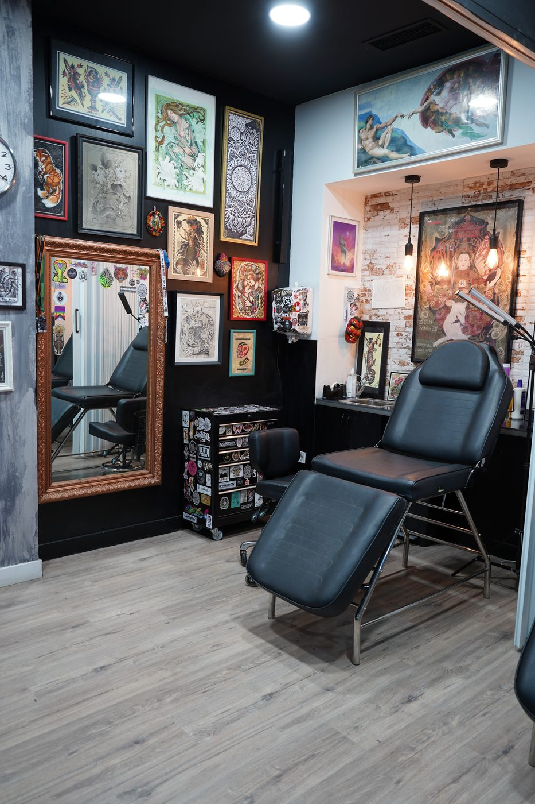
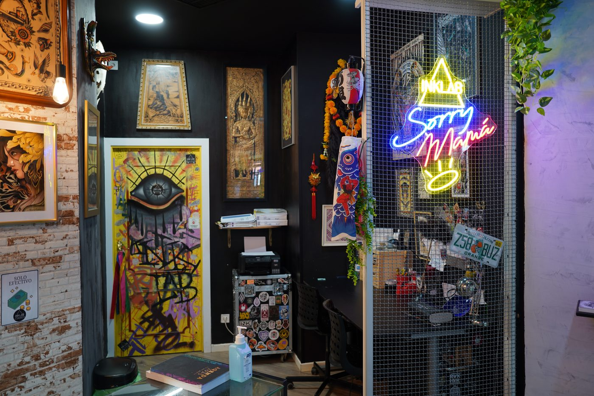

01
Seguridad como fundamento.
Cumplimos normativas y registros sanitarios de la Comunidad de Madrid, aplicamos técnicas precisas y trabajamos con materiales certificados.

Seguridad absoluta y corazón en cada creación.
Nuestra trayectoria
Llegamos a este local en 2017, pero nuestra historia empezó mucho antes: en 2003, cuando ya estábamos perfeccionando técnicas, afinando el ojo y aprendiendo que en este oficio no basta con “hacerlo bien”: hay que hacerlo mejor que bien.
En todo este tiempo hemos descubierto una verdad irrefutable: cada persona es única y cada trabajo merece alma, no solo técnica.


La base visual y verbal de INKLAB.
Cumplimos normativas y registros sanitarios de la Comunidad de Madrid, aplicamos técnicas precisas y trabajamos con materiales certificados.
Nos gusta lo artesanal, lo pensado, lo que se hace con intención. Si no lleva alma, no sale de nuestro estudio.
Tomamos tu esencia y la elevamos para que no pase desapercibida.
Tinta, técnica y criterio: coherencia visual, limpieza y detalle en cada aplicación.
Interior, fachada y entorno visual del estudio.

